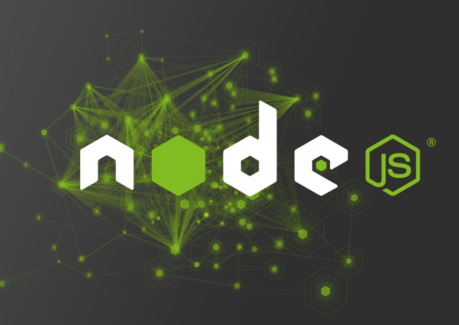
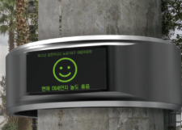
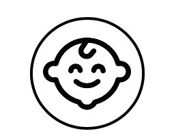
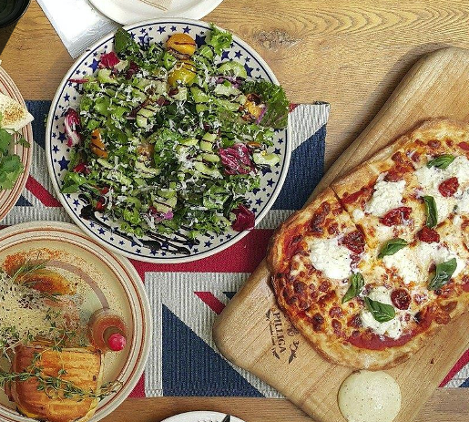
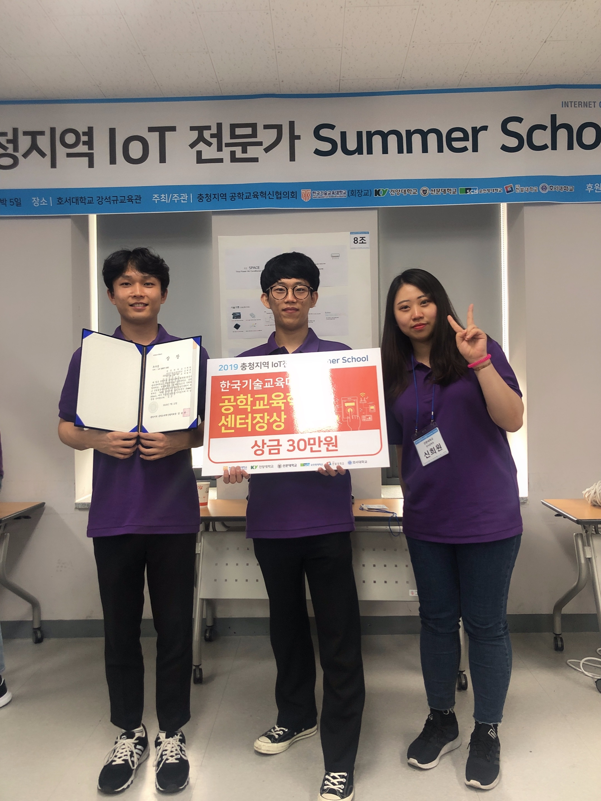
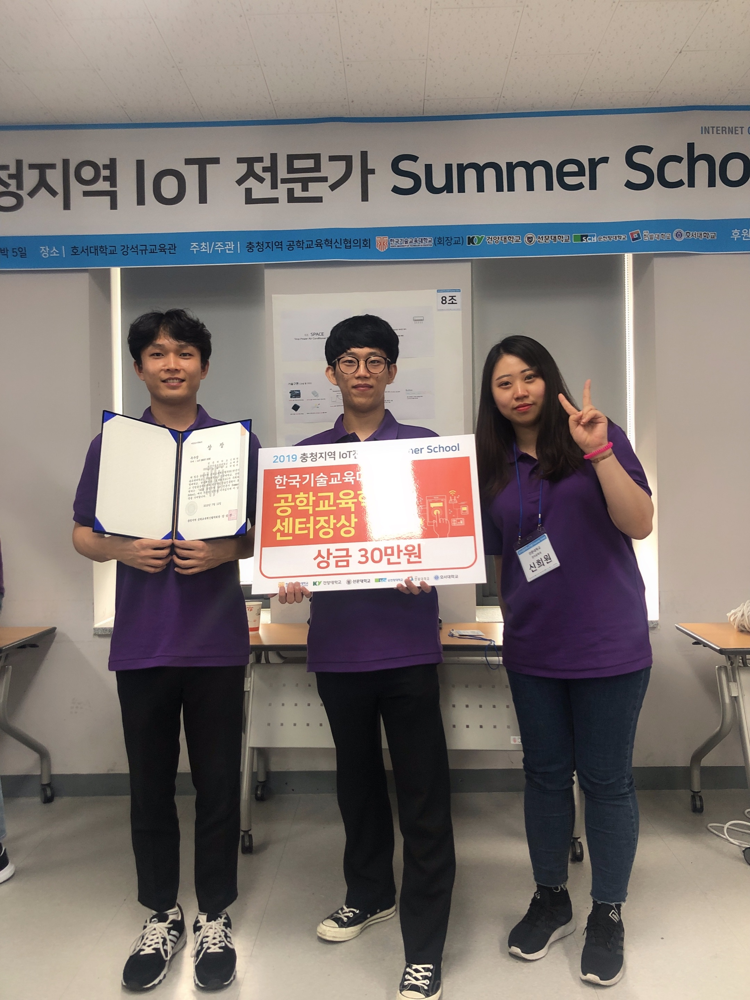

Project

Eco-Ring
<정보통신공학과-산업디자인학과 융합프로젝트>
미세먼지 농도를 측정하여 시각적 정보를 제공하는 링 형태의 디바이스

Smart-Diaper
<다학제간 캡스톤 디자인>
아이의 대소변 및 자세 측정 후 스마트폰으로 정보 전송 서비스


오늘 뭐먹지
<캡스톤 디자인>
REST-API를 활용한 대학별 맞춤 음식점 추천 서비스
Awards
